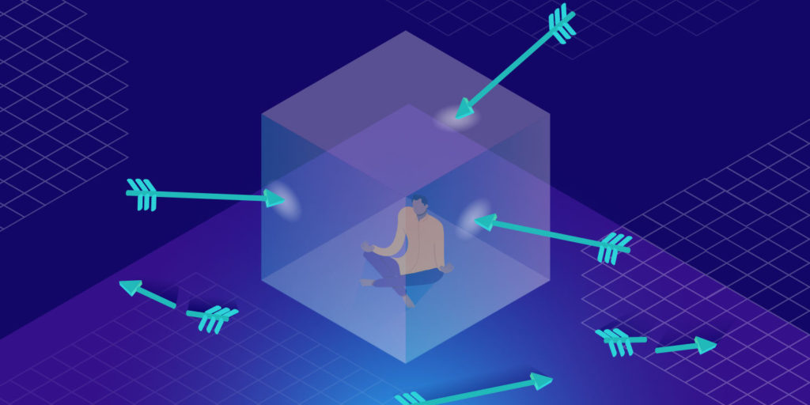

There are many risks that emerge from using the network,
however, with proper security we can prevent them from
occuring,
some examples of threats to your network are:
malware - software that is designed to damage or control computer systems, some examples of malware include viruses, spyware and adware
hacking - trying to gain unauthorised access to your computer. There are white hat hackers and black hat hackers. Although both of them are hackers, white hat hackers work with companies to find weaknesses in their systems, whereas black hat hackers access the systems' data illegally
viruses - computer programs that need user input to replicate themselves, they replicate themselves by modifying other computer programs and inserting their own code
spyware - software that can gather data about an individual. This can be broken into four categories: adware, system monitors, tracking and trojans.

DoS or DDOS - these stand for a denial of service (or distributes denial of service), this attack disrupts a server through flooding it with requests
Fortunately, there are ways to be protected from these risks. You can stay protected by:
- using anti-virus software - a software created to specifically identify and remove malware
- updating your software regularly
- using a firewall - it protects unauthorized access from your network and computer
- watching out for traps such as phishing